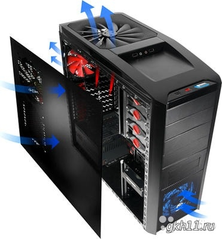

Устройства вывода

Устройства вывода предназначены для передачи информации от компьютера к пользователю.
Основными устройствами вывода являются монитор, принтер, плоттер акустические колонки, наушники.
Монитор — это устройство для визуального отображения (вывода) текстовой и графической информации.
Самым распространенным в настоящее время типом мониторов являются жидкокристаллические мониторы LCD.
Однако еще достаточно большое число пользователей применяют устаревшие мониторы с электронно-лучевой
трубкой (CRT-мониторы). Существуют также газоплазменные мониторы, которые пока являются достаточно большой
редкостью ввиду их высокой цены.
CRT-мониторы {Cathode Ray Tube — «катодно-лучевая трубка». В основе этих мониторов лежит
катодно-лучевая или электронно-лучевая трубка (ЭЛТ). Внутри этой трубки вакуум.
Важной характеристикой мониторов является разрешающая способность, которая определяется количеством
пикселей, размещающихся по горизонтали и вертикали монитора. Современные мониторы должны обеспечивать
разрешающую способность не менее 1024 х 768 пикселей.
Жидкокристаллические (ЖК) мониторы (LCD — Liquid Crystal Display, используют так называемые
жидкие кристаллы, которые могут изменять свою структуру и прозрачность под действием электрического
напряжения. Когда нет электрического заряда, жидкие кристаллы находятся в аморфном состоянии и
пропускают свет. Количеством света, проходящего через жидкие кристаллы, можно управлять с помощью
электрических зарядов.
Преимуществами жидкокристаллических мониторов являются их компактность, низкое энергопотребление,
отсутствие электромагнитного излучения, высокие уровни яркости. Однако, в отличие от CRT-мониторов,
у LCD-мониторов есть такая характеристика, как стандартное разрешение. Только в стандартном разрешении
ЖК-монитор воспроизводит изображение наиболее качественно. Разрешение больше стандартного нельзя
установить в принципе. При уменьшении разрешения изображение становится нечетким, с «зазубринами».
Также, по сравнению с мониторами ЭЛТ, у жидкокристаллических мониторов хуже точность цветопередачи.
Существенным недостатком является зависимость контрастности от угла обзора.
Принтер — это устройство для вывода цифровой информации на бумагу.
Существуют три основных типа принтеров: матричные, струйные и лазерные.
Матричные принтеры формируют изображение построчно с помощью печатающей головки, которая
ударяет по бумаге через красящую ленту. Головка содержит ряд иголок (pin), от количества которых зависит
качество изображения.
В настоящее время этот тип принтеров устарел из-за большого количества недостатков, таких как низкая
скорость печати, высокий уровень шума при работе, низкое качество изображения. К плюсам можно отнести
невысокую стоимость расходных материалов и возможность печати на бумаге практически любого качества.
Струйные принтеры печатают путем набрызгивания чернил на бумагу через мелкие сопла в
печатающей головке. В черно-белых принтерах используется один цвет краски (черный), в цветных
принтерах — голубой, пурпурный и желтый. В более дорогих моделях цветных принтеров к трем базовым
цветам добавляется черный, так как чисто черный цвет с помощью трех базовых цветов получить невозможно.
Стоимость самих струйных принтеров обычно невысока, но зато очень высока стоимость расходных материалов
(картриджей, наполненных чернилами).
Кроме того, для струйного принтера нужна бумага высокого качества, иначе краска будет расплываться.
Скорость печати струйных принтеров (особенно цветных) очень невысока. Но, несмотря на все недостатки,
струйные принтеры широко распространены, так как они обеспечивают достаточно высокое качество печати.
В лазерных принтерах изображение создается путем переноса на бумагу специального порошка (тонера).
Источник света (лазер) освещает предварительно заряженную поверхность фотобарабана. На тех местах,
куда попал свет, меняется заряд, и к ним притягивается тонер. Затем тонер за счет электростатики
переносится на бумагу, после чего попадает в печку, где и закрепляется под действием высокой температуры.
Качество такого изображения очень высокое. Так как лазерные принтеры формируют изображение постранично,
а не построчно (как матричные и струйные принтеры), то и скорость их работы достаточно высока. Скорость
работы лазерных принтеров измеряется в страницах в минуту. Современные принтеры обеспечивают скорость
печати 20-40 страниц в минуту.
Лазерные принтеры могут быть монохромными или цветными, однако цветные принтеры очень дороги. Основным
недостатком лазерных принтеров является высокая стоимость. К достоинствам (помимо высокого качества
печати и скорости) можно отнести низкий уровень шума, долговечность полученных отпечатков, невысокую
стоимость расходных материалов. Картриджа для лазерного принтера хватает на достаточно большое
количество отпечатков.